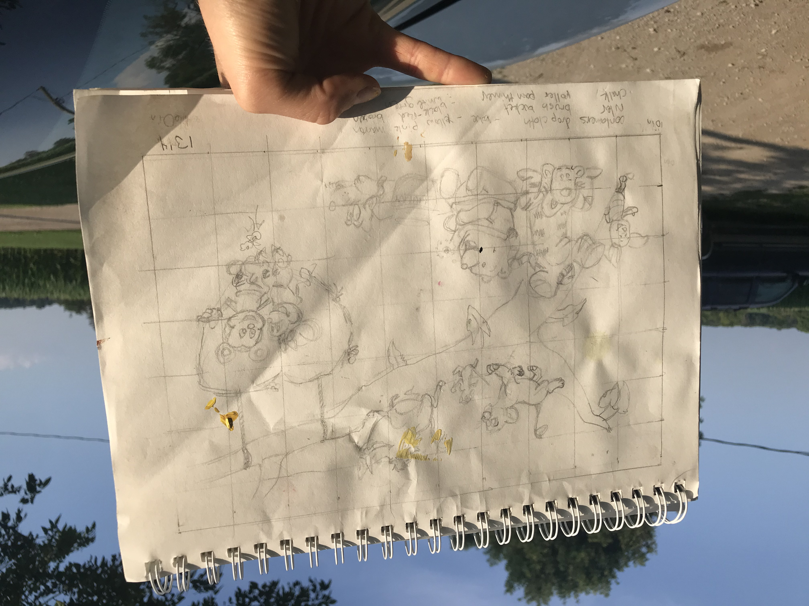
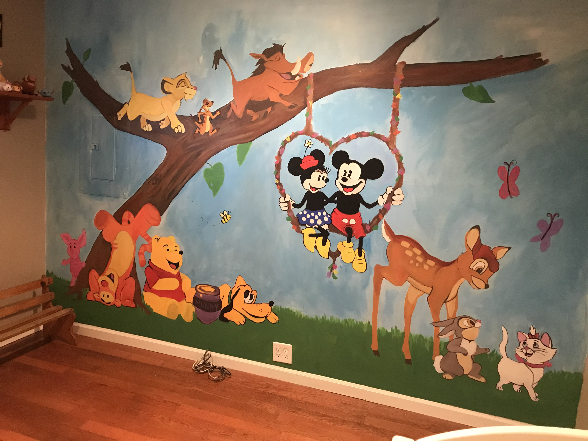

Disney Character Mural
This nursery wall design was inspired by my sister-in-law's love for disney movies. My brother and his wife chose a tree as the main scene and a few of their favorite characters for me to work with. There were several characters that didn't make the cut because I wanted to get the best results with the little time that I had. After careful placement of each animal in reguards to composition and appeal we agreed on this sketch. After presenting the design, I created a grid to work from overtop of the sketch.
I gathered the materials I needed: black, white, red, blue, and yellow paint, paint thinner, brushes, chalk, masking tape and drop cloth to keep a clean station to work around the room and light switches.
